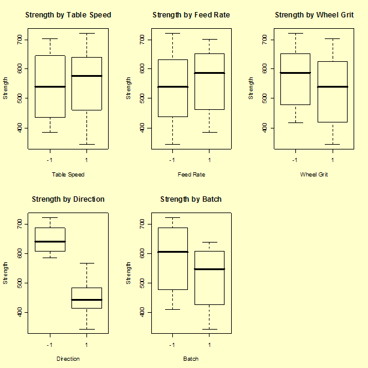
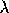

|
5.
Process Improvement
5.4. Analysis of DOE data 5.4.7. Examples of DOE's
|
|||
| Data Source | |||
| This example uses data from a NIST high performance ceramics experiment |
This data set was taken from an experiment that was performed a few
years ago at NIST by Said Jahanmir of the Ceramics Division in the
Material Science and Engineering Laboratory. The original analysis
was performed primarily by Lisa Gill of the Statistical Engineering
Division. The example shown here is an independent analysis of a
modified portion of the original data set.
The original data set was part of a high performance ceramics experiment with the goal of characterizing the effect of grinding parameters on sintered reaction-bonded silicon nitride, reaction bonded silicone nitride, and sintered silicon nitride. Only modified data from the first of the three ceramic types (sintered reaction-bonded silicon nitride) will be discussed in this illustrative example of a full factorial data analysis. The reader can download the data as a text file. |
||
| Description of Experiment: Response and Factors | |||
| Response and factor variables |
Purpose: To determine the effect of machining factors on ceramic strength
Response variable = mean (over 15 repetitions) of the ceramic strength Number of observations = 32 (a complete 25 factorial design)
Factor 1 = Table Speed (2 levels: slow (.025 m/s) and fast (.125 m/s)) Factor 2 = Down Feed Rate (2 levels: slow (.05 mm) and fast (.125 mm)) Factor 3 = Wheel Grit (2 levels: 140/170 and 80/100) Factor 4 = Direction (2 levels: longitudinal and transverse) Factor 5 = Batch (2 levels: 1 and 2) |
||
| The data |
The design matrix, with measured ceramic strength responses, appears
below. The actual randomized run order is given in the last column. (The
interested reader may download the data as a
text file.)
speed rate grit direction batch strength order
1 -1 -1 -1 -1 -1 680.45 17
2 1 -1 -1 -1 -1 722.48 30
3 -1 1 -1 -1 -1 702.14 14
4 1 1 -1 -1 -1 666.93 8
5 -1 -1 1 -1 -1 703.67 32
6 1 -1 1 -1 -1 642.14 20
7 -1 1 1 -1 -1 692.98 26
8 1 1 1 -1 -1 669.26 24
9 -1 -1 -1 1 -1 491.58 10
10 1 -1 -1 1 -1 475.52 16
11 -1 1 -1 1 -1 478.76 27
12 1 1 -1 1 -1 568.23 18
13 -1 -1 1 1 -1 444.72 3
14 1 -1 1 1 -1 410.37 19
15 -1 1 1 1 -1 428.51 31
16 1 1 1 1 -1 491.47 15
17 -1 -1 -1 -1 1 607.34 12
18 1 -1 -1 -1 1 620.80 1
19 -1 1 -1 -1 1 610.55 4
20 1 1 -1 -1 1 638.04 23
21 -1 -1 1 -1 1 585.19 2
22 1 -1 1 -1 1 586.17 28
23 -1 1 1 -1 1 601.67 11
24 1 1 1 -1 1 608.31 9
25 -1 -1 -1 1 1 442.90 25
26 1 -1 -1 1 1 434.41 21
27 -1 1 -1 1 1 417.66 6
28 1 1 -1 1 1 510.84 7
29 -1 -1 1 1 1 392.11 5
30 1 -1 1 1 1 343.22 13
31 -1 1 1 1 1 385.52 22
32 1 1 1 1 1 446.73 29
|
||
| Analysis of the Experiment | |||
| Five basic steps | The experimental data will be analyzed following the previously described five basic steps. The analyses shown in this page can be generated using R code. | ||
| Step 1: Look at the data | |||
| Plot the response variable |
We start by plotting the response data several ways to see if any trends
or anomalies appear that would not be accounted for by the standard
linear response models.
First, we look at the distribution of the response variable regardless of factor levels by generating the following four plots.
Clearly there is "structure" that we hope to account for when we fit a response model. For example, the response variable is separated into two roughly equal-sized clumps in the histogram. The first clump is centered approximately around the value 450 while the second clump is centered approximately around the value 650. As hoped for, the run-order plot does not indicate a significant time effect. |
||
| Box plots of response by factor variables |
Next, we look at box plots of the response for each factor.
 Several factors, most notably "Direction" followed by "Batch" and possibly "Wheel Grit", appear to change the average response level. |
||
| Step 2: Create the theoretical model | |||
| Theoretical model: assume all four-factor and higher interaction terms are not significant | For a 25 full factorial experiment we can fit a model containing a mean term, five main effect terms, ten two-factor interaction terms, ten three-factor interaction terms, five four-factor interaction terms, and a five-factor interaction term (32 parameters). However, we start by assuming all four-factor and higher interaction terms are non-existent. It's very rare for such high-order interactions to be significant, and they are very difficult to interpret from an engineering viewpoint. The assumption allows us to accumulate the sums of squares for these terms and use them to estimate an error term. We start with a theoretical model with 26 unknown constants, hoping the data will clarify which of these are the significant main effects and interactions we need for a final model. | ||
| Step 3: Fit model to the data | |||
| Results from fitting up to and including third-order interaction terms |
The ANOVA table for the 26-parameter model (intercept not shown) follows.
Summary of Fit
RSquare 0.995127
RSquare Adj 0.974821
Root Mean Square Error 17.81632
Mean of Response 546.8959
Observations 32
Sum
Source DF of Squares F Ratio Prob>F
X1: Table Speed 1 894.33 2.8175 0.1442
X2: Feed Rate 1 3497.20 11.0175 0.0160
X1: Table Speed* 1 4872.57 15.3505 0.0078
X2: Feed Rate
X3: Wheel Grit 1 12663.96 39.8964 0.0007
X1: Table Speed* 1 1838.76 5.7928 0.0528
X3: Wheel Grit
X2: Feed Rate* 1 307.46 0.9686 0.3630
X3: Wheel Grit
X1:Table Speed* 1 357.05 1.1248 0.3297
X2: Feed Rate*
X3: Wheel Grit
X4: Direction 1 315132.65 992.7901 <.0001
X1: Table Speed* 1 1637.21 5.1578 0.0636
X4: Direction
X2: Feed Rate* 1 1972.71 6.2148 0.0470
X4: Direction
X1: Table Speed 1 5895.62 18.5735 0.0050
X2: Feed Rate*
X4: Direction
X3: Wheel Grit* 1 3158.34 9.9500 0.0197
X4: Direction
X1: Table Speed* 1 2.12 0.0067 0.9376
X3: Wheel Grit*
X4: Direction
X2: Feed Rate* 1 44.49 0.1401 0.7210
X3: Wheel Grit*
X4: Direction
X5: Batch 1 33653.91 106.0229 <.0001
X1: Table Speed* 1 465.05 1.4651 0.2716
X5: Batch
X2: Feed Rate* 1 199.15 0.6274 0.4585
X5: Batch
X1: Table Speed* 1 144.71 0.4559 0.5247
X2: Feed Rate*
X5: Batch
X3: Wheel Grit* 1 29.36 0.0925 0.7713
X5: Batch
X1: Table Speed* 1 30.36 0.0957 0.7676
X3: Wheel Grit*
X5: Batch
X2: Feed Rate* 1 25.58 0.0806 0.7860
X3: Wheel Grit*
X5: Batch
X4: Direction * 1 1328.83 4.1863 0.0867
X5: Batch
X1: Table Speed* 1 544.58 1.7156 0.2382
X4: Directio*
X5: Batch
X2: Feed Rate* 1 167.31 0.5271 0.4952
X4: Direction*
X5: Batch
X3: Wheel Grit* 1 32.46 0.1023 0.7600
X4: Direction*
X5: Batch
|
||
| This fit has a large R2 and adjusted R2, but the high number of large (>0.10) p-values (in the "Prob>F" column) makes it clear that the model has many unnecessary terms. | |||
| Stepwise regression | Starting with the 26 terms, we use stepwise regression to eliminate unnecessary terms. By a combination of stepwise regression and the removal of remaining terms with a p-value larger than 0.05, we quickly arrive at a model with an intercept and 12 significant effect terms. | ||
| Results from fitting the 12-term model |
Summary of Fit
RSquare 0.989114
RSquare Adj 0.982239
Root Mean Square Error 14.96346
Mean of Response 546.8959
Observations (or Sum Wgts) 32
Sum
Source DF of Squares F Ratio Prob>F
X1: Table Speed 1 894.33 3.9942 0.0602
X2: Feed Rate 1 3497.20 15.6191 0.0009
X1: Table Speed* 1 4872.57 21.7618 0.0002
X2: Feed Rate
X3: Wheel Grit 1 12663.96 56.5595 <.0001
X1: Table Speed* 1 1838.76 8.2122 0.0099
X3: Wheel Grit
X4: Direction 1 315132.65 1407.4390 <.0001
X1: Table Speed* 1 1637.21 7.3121 0.0141
X4: Direction
X2: Feed Rate* 1 1972.71 8.8105 0.0079
X4: Direction
X1: Table Speed* 1 5895.62 26.3309 <.0001
X2: Feed Rate*
X4:Direction
X3: Wheel Grit* 1 3158.34 14.1057 0.0013
X4: Direction
X5: Batch 1 33653.91 150.3044 <.0001
X4: Direction* 1 1328.83 5.9348 0.0249
X5: Batch
|
||
| Normal plot of the effects |
Non-significant effects should effectively follow an approximately
normal distribution with the same location and scale. Significant
effects will vary from this normal distribution. Therefore, another
method of determining significant effects is to generate a normal
probability plot of all 31 effects. The effects that deviate
substantially from the straight line fit to the data are
considered significant.
Although this is a somewhat subjective criteria, it tends to work
well in practice. It is helpful to use both the numerical output
from the fit and graphical techniques such as the normal probability
plot in deciding which terms to keep in the model.
A normal probability plot of the effects is shown below. (To reduce the scale of the y-axis, the largest two effects, X4: Direction and X5: Batch, are not shown on the plot. In addition, these two effects were not used to compute the normal reference line.) The effects we consider to be significant are labeled. In this case, we have arrived at the exact same 12 terms by looking at the normal probability plot as we did from the stepwise regression.
Most of the effects cluster close to the center (zero) line and follow the fitted normal model straight line. The effects that appear to be above or below the line by more than a small amount are the same effects identified using the stepwise routine, with the exception of X1. Some analysts prefer to include a main effect term when it has several significant interactions even if the main effect term itself does not appear to be significant. |
||
| Model appears to account for most of the variability |
At this stage, the model appears to account for most of the variability
in the response, achieving an adjusted R2 of 0.982. All the
main effects are significant, as are six 2-factor interactions and
one 3-factor interaction. The only interaction that makes little
physical sense is the " X4: Direction*X5: Batch"
interaction - why would the response using one batch of material
react differently when the batch is cut in a different direction as
compared to another batch of the same formulation?
However, before accepting any model, residuals need to be examined. |
||
| Step 4: Test the model assumptions using residual graphs (adjust and simplify as needed) | |||
| Plot of residuals versus predicted responses |
First we look at the residuals plotted versus the predicted responses.
The residuals appear to spread out more with larger values of predicted strength, which should not happen when there is a common variance. |
||
|
Next we examine the distribution of the residuals with a normal quantile
plot, a box plot, a histogram, and a run-order plot.
None of these plots appear to show typical normal residuals and the boxplot indicates that there may be outliers. |
|||
| Step 4 continued: Transform the data and fit the model again | |||
| Box-Cox Transformation |
We next look at whether we can model a transformation of the response
variable and obtain residuals with the assumed properties. We
calculate an optimum Box-Cox transformation by finding the value of

that maximizes the negative log likelihood.
The optimum is found at = 0.2. A new Y: Strength variable is calculated using:
|
||
| Fit model to transformed data | When the 12-effect model is fit to the transformed data, the "X4: Direction * X5: Batch" interaction term is no longer significant. The 11-effect model fit is shown below, with parameter estimates and p-values. | ||
| The fitted model after applying Box-Cox transformation |
The 11-Effect Model Fit to Tranformed Response Data
Response: Y:NewStrength
Summary of Fit
RSquare 0.99041
RSquare Adj 0.985135
Root Mean Square Error 13.81065
Mean of Response 1917.115
Observations (or Sum Wgts) 32
Parameter
Effect Estimate p-value
Intercept 1917.115 <.0001
X1: Table Speed 5.777 0.0282
X2: Feed Rate 11.691 0.0001
X1: Table Speed* -14.467 <.0001
X2: Feed Rate
X3: Wheel Grit -21.649 <.0001
X1: Table Speed* 7.339 0.007
X3: Wheel Grit
X4: Direction -99.272 <.0001
X1: Table Speed* -7.188 0.0080
X4: Direction
X2: Feed Rate* -9.160 0.0013
X4: Direction
X1: Table Speed* 15.325 <.0001
X2: Feed Rate*
X4:Direction
X3: Wheel Grit* 12.965 <.0001
X4: Direction
X5: Batch -31.871 <.0001
|
||
| Model has high R2 | This model has a very large R2 and adjusted R2. The residual plots (shown below) are quite a bit better behaved than before | ||
| Residual plots from model with transformed response |
The plot of the residuals versus the predicted values indicates that the
transformation has resolved the problem of increasing variace with increasing
strength.
The normal probability plot, box plot, and the histogram of the residuals do not indicate any serious violations of the model assumptions. The run sequence plot of the residuals does not indicate any time dependent patterns. |
||
| Step 5. Answer the questions in your experimental objectives | |||
| Important main effects and interaction effects | The magnitudes of the effect estimates show that "Direction" is by far the most important factor. "Batch" plays the next most critical role, followed by "Wheel Grit". Then, there are several important interactions followed by "Feed Rate". "Table Speed" plays a role in almost every significant interaction term, but is the least important main effect on its own. Note that large interactions can obscure main effects. | ||
| Plots of the main effects and significant 2-way interactions |
Plots of the main effects and the significant 2-way interactions are
shown below.
Next, we plot 2-way interaction plot showing means for all combinations of levels for the two factors. The labels located in the diagonal spaces of the plot grid have two purposes. First, the label indicates the factor associated with the x-axis for all plots in the same row. Second, the label indicates the factor defining the two lines for plots in the same column. For example, the plot labeled r*s contains averages for low and high levels of the rate variable (x-axis) for both levels of speed. The blue line represents the low level of speed and the pink line represents the high level of speed. The two lines in the r*s plot cross, indicating that there is interaction between rate and speed. Parallel lines indicate that there is no interaction between the two factors. |
||
| Optimal Settings |
Based on the analyses, we can select factor settings that
maximize ceramic strength. Translating from "-1" and "+1" back to
the actual factor settings, we have: Table speed at "1" or .125m/s;
Down Feed Rate at "1" or .125 mm; Wheel Grit at "-1" or 140/170;
and Direction at "-1" or longitudinal.
Unfortunately, "Batch" is also a very significant factor, with the first batch giving higher strengths than the second. Unless it is possible to learn what worked well with this batch, and how to repeat it, not much can be done about this factor. |
||
| Comments | |||
| Analyses with value of Direction fixed indicates complex model is needed only for transverse cut |
|
||
| Half fraction design |
|
||
| Natural log transformation |
|
||